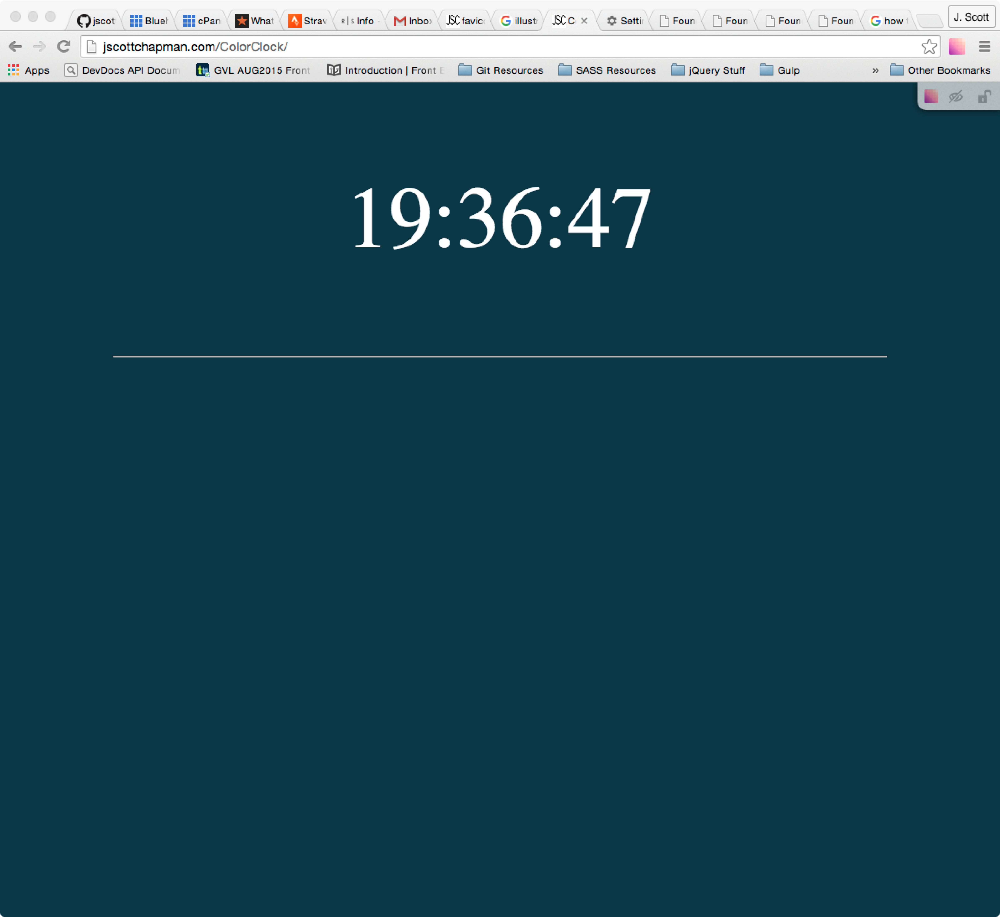
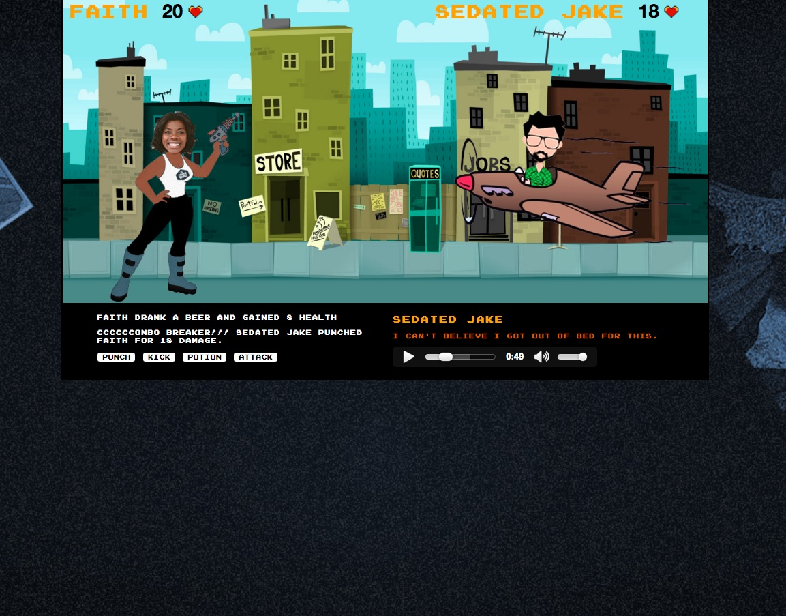
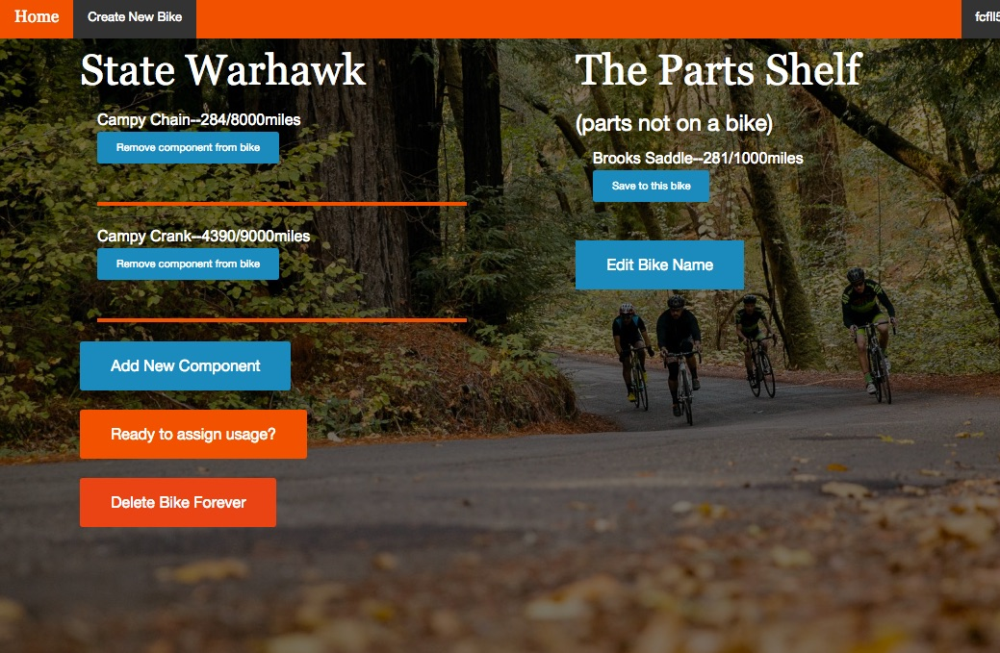

J Scott Chapman
I make things for the web.
scott@jscottchapman.com
(864)-247-3890
Come on in! Hang out for a little while.
Below are a few things I've made. Check them out.

Color Clock
This is a clock made with JavaScript. The color and the width of the bar changes with the time. The color is based on the correlation between the six digit representation of time and the six digit representation of colors.

Jakes On A Plane
Turn Based Game made as a group project with HTML, CSS, and JavaScript over a weekend.

Cycle FYI
An application that tracks the usage of bicycle components using the user's Strava data.
Other things!
See what I've been doing.
“Go and make interesting mistakes, make amazing mistakes, make glorious and fantastic mistakes. Break rules. Leave the world more interesting for your being here. Make. Good. Art.” ~Neil Gaiman